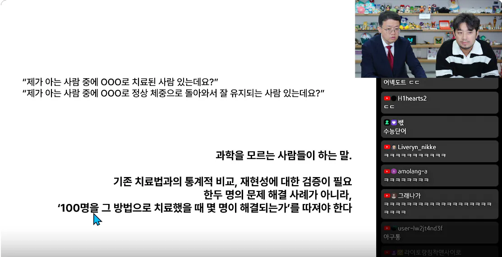
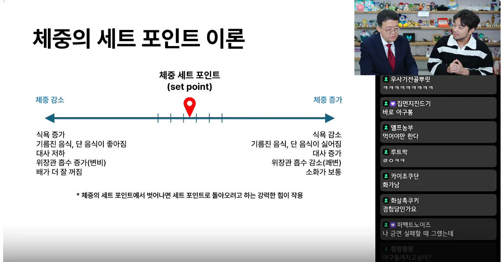
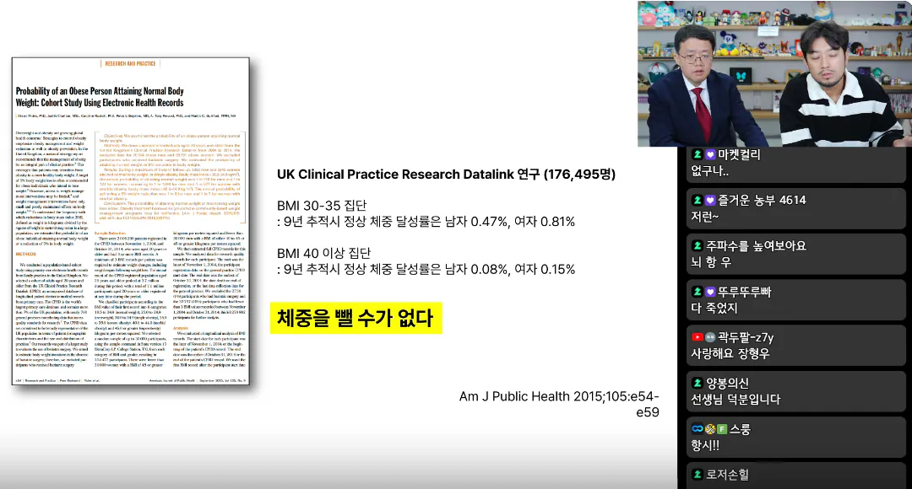
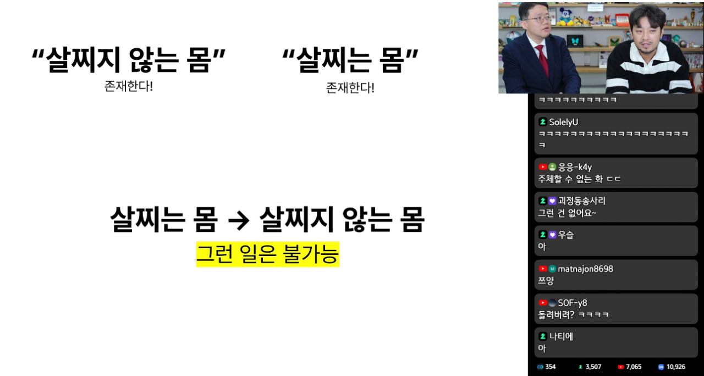
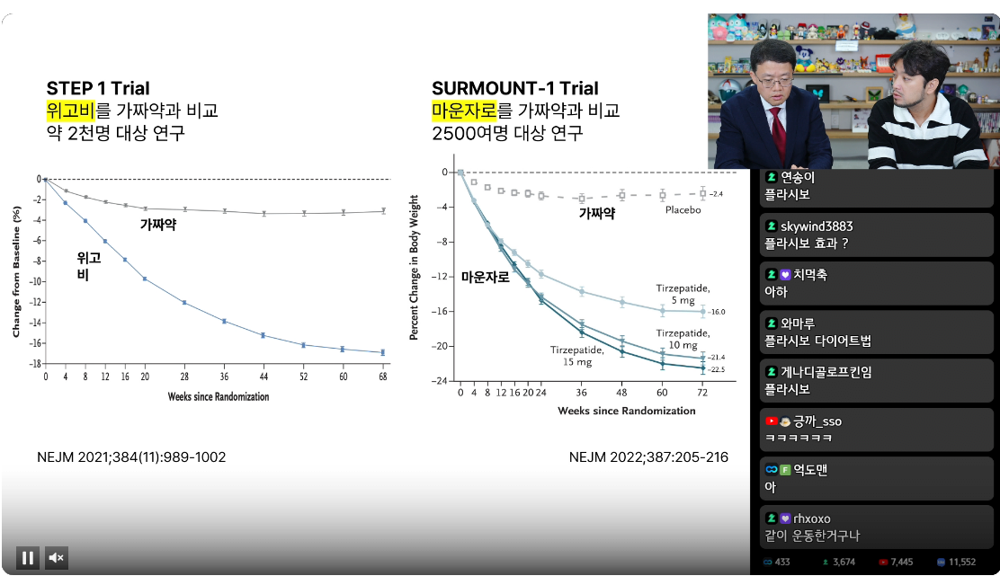

체중이 본인의 세트 포인트에서 벗어나는 순간 일어나는 효과들

17만명 대상으로 한 체중 감량 연구


동일한 환경에서
가짜약 맞은 사람들과 위고비 마운자로 맞은 사람들의 체중감량 비교


체중이 본인의 세트 포인트에서 벗어나는 순간 일어나는 효과들

17만명 대상으로 한 체중 감량 연구


동일한 환경에서
가짜약 맞은 사람들과 위고비 마운자로 맞은 사람들의 체중감량 비교
나치나 일제, 북한 수용소처럼 강제로 노동시키고 굶기면 살이 쭉쭉 빠지는 게 맞아. 이건 그냥 에너지 보존법칙이야. 근데 강철의 의지를 갖지 못한 절대다수의 현대인이 유혹으로 가득찬 일상생활을 하면서 그런 식으로 살을 빼는 건 사실상 불가능한 일이라고. 인간의 탐욕이라는 현실적 한계를 부정하고 능력만큼 일하고 필요한 만큼 가져가지는 이상론을 떠드는 공산주의자 보면 아구통 돌리고 싶지? 딱 그 꼴이야.
몸무게가 갑자기 5kg씩 훅훅 찌는거도 아니고 약물치료에 의존해야 할만큼의 시간동안 몇번의 제동을 걸 타이밍이 있었음에도
무식하게 쳐먹고 안움직인건 게으르고 멍청한게 맞지. 의지가 부족했던거도 맞고 뭘 계속 부정을 쳐하냐
니말이 맞다
니가최고야
역시 개붕이야
너짱
와 님 하버드 출신임?
아구통 맞아 그러다가
돼지들은 부지런해
노산 주제에서는 과학이랑 기싸움 하지 말라고 비웃는 사람이 한가득이지만
위고비 주제에서는 과학이 틀렸다고 진지하게 주장하는 사람들이 한가득임 ㅋㅋㅋㅋㅋㅋㅋ
너가 잘못아는거야 내 주변에 40살 후반에도 별문제없이 출산한 아들맘있어. 다들 의지와 노력이 부족한거라니까
그정도지능임 ㄹㅇ
ㄹㅇㅋㅋㅋㅋㅋㅋㅋ
나는 안먹으면 빠지고 먹으면 찌더라
비만=만병의근원
비만치료제=만병통치약
안찌는 사람이 계속 안찔 순 있어도
한 번 찌면 안찌는 체질로 돌아가는건
약의 도움이 필요하다는건가?
마운자로 맞는다고 살 안 찌는 체질로 변하지는 않을 거임 그래서 다이어트 성공 후 단약 했다가 폭풍 요요 오고 이런 케이스도 많고..
아 그렇지
약도 끊는 순간 다시 돌아감
예전에 이런 약 이전에도
비만 세포 이러면서
한 번 찌면 쉽게 찐다 이러던게
여기 적용되는건가
위고비, 마운자로 끊으면 원래 몸으로 돌아간다는 거라고 해석해도 될듯
왜 과학을 거부하고 자신의 경험만 믿는지 모르겠음
이러다 내가 볼 땐 지구도 평평하다 하겠다
BMI 30 넘기는 것 부터가 일반적이지 않은것 같은데 약물 치료가 가능하다면 적극 지원해 주는게 맞지 않나?
아구통 드리고 싶어요
인생에서 이룬게 비만 아닌거밖에 없어서 이거 하나만은 의지와 노력이 필요한 일이어야해서 그럼
ㄹㅇ 음습 그 자체
다이어트 성공한 사람들도 몇년지나면 다시 돌아오더라
ㅋㅋ원래 어중간한 사람이 목소리 큼
안아키같은거지
안아키로 치유된 극소수 사례를 예를 들어서 현대의학이 틀렸다고 주장하는
일단, 고도비만 부터는 무조건 약 꼽아야 됨.
위고비 꽂으면 초절식 하게 돼서 1000칼로리 정도밖에 못먹게 된다는데
대부분 인간의 신진대사 유지를 위한 최소 칼로리가 1600인거 생각하면
확실히 탈모나 근육빠지는 문제같은게 생기긴 할거임
하지만 중증, 고도비만인 상태에서는 이미 몸이 맛갈대로 간 상태라
초절식으로 인한 부작용은 아주 사소한 문제가 되버림.
그딴 작은거 챙길 바에 초절식 하는게 무조건 나음
근데 고도비만이 아닌 과체중~초기비만 정도면 안꼽는게 나을거 같긴 함
일단 초절식으로 인한 위의 문제랑 더불어서 안맞게 되면 다시 식욕이 회복된다니까
초단기적으로 빠르게 빼야되는거 아니면 전통적인 식단법이 장기적으론 건강하지 않을까?
결론적으로, 아구통님 말씀이 다 맞다고 생각하는데
문제는 인터넷이라는 특성상 '전통적인 다이어트 방법은 체질이 맞는 사람 외에는 절대 불가능하며 무조건 약을 꼽아야 한다'
로 왜곡되게 호도되고 있는 것 같음
전통적인 다이어트 방법의 장점도 나름 없지는 않다고 생각
이상 키빼몸 90 과체중으로 7년 살아온 나의 생각
저 교수는 노력으로 아예 안빠진다 이걸 말하는게 아니고
유지가 안된다는거야 인간이 호르몬의 명령을 단시간 이기는건 가능해도 장기간 혹은 평생 이겨내기는 매우 힘드니까
근데 약을 꽂으면 유지가 된다는거고 고혈압이면 고혈압약 먹는것처럼 비만도 관리해야 된다는 입장
그건 나이먹어서 대사량이 줄어든거에요